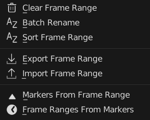
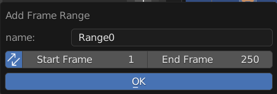
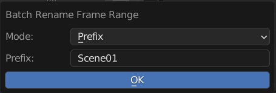
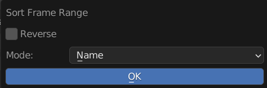
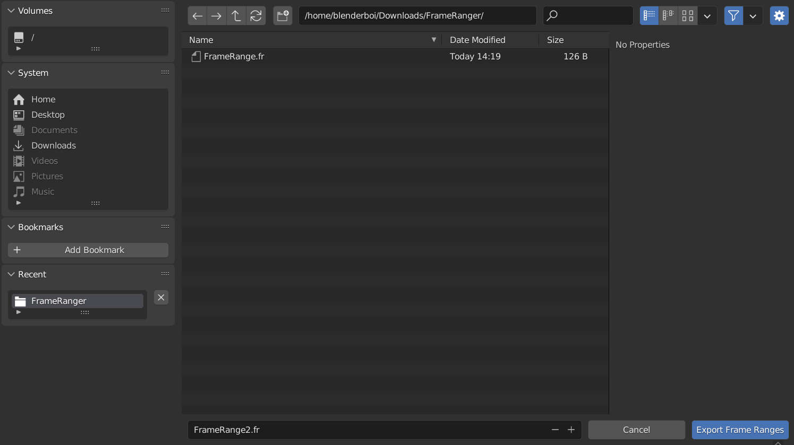
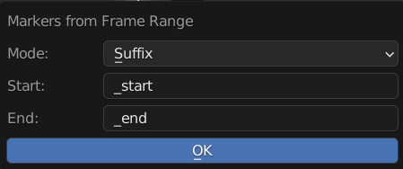
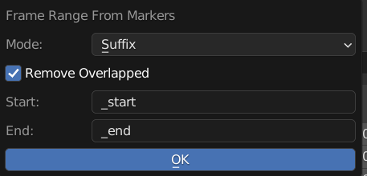

Menu Operators
Operators to Manage Frame Ranger List, Find Next to the Frame Range List
Add Frame Range
Add Frame Range to List
Name: Name of the New Frame Range
Sync: Also Update Scene Frame Range Live
Start: Start Frame
End: End Frame
Clear Frame Range
Remove All Frame Range From List
Batch Rename
Batch Rename All the Frame Range in List, Adding Prefix, Suffix, or Find and Replace
Mode: Method of Rename
Prefix: Prepend String A to the Start of the Name
Suffix: Append String A to the End of the Name
Find and Replace: Find String A and Replace with String Batch
String A (Prefix / Suffix / Find): Use for Prefix, Suffix, and Find
String B (Replace): Stirng to be Replaced
Sort Frame Range
Sort Frame Range in the List to be in Order
Reverse: Sort in Reverse Order
Mode: Sort By Method
Name: Sort by Frame Range Name
Range Size: Sort by Frame Range Size
Export & Import Frame Range
Export or Import Frame Range from or to scene
The File Exported is Actually a json File, but the Extension is .fr so that it will be easier to be identified
Markers From Frame Range
Creates Timeline Markers From Frame Range List
Mode: Sort By Method
Pair: Starting and End Marker will use the Same Name
Prefix: Prepend Prefix to Start and End to the Created Marker
Suffix: Append Suffix to Start and End to the Created Marker
Start: String to use adding Affixes on the Start Marker
End: String to use adding Affixes on the End Marker
Frame Range From Markers
Creates Frame Range From Detected Timeline Markers
Mode: Sort By Method
Pair: Find Marker Pairs with Same Name
Prefix: Find Marker Pairs Using Prefix
Suffix: Find Marker Pairs Using Sufix
Remove Overlapped: Remove Overlapped Marker that have the same name Before Operation
Start: Affixes of the Start Marker to be found
End: Affixes of the End Marker to be found